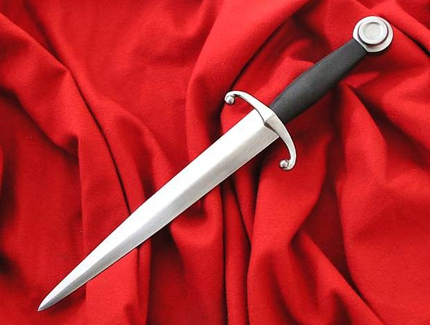
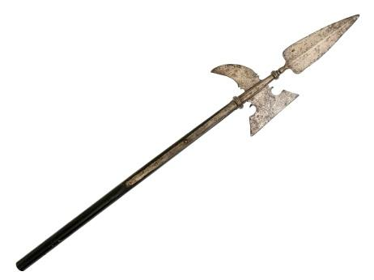

Холодное оружие отдельных типов в Средние века было универсальным, объединяя свойства колющих, рубящих и режущих категорий вооружения. Широко распространившись по всему миру еще в те далекие времена, некоторые востребованы и в наши дни.
Колюще-режущее оружие
 Одним из самых первых типов холодного оружия в истории человечества был, конечно, нож — универсальный инструмент, который был пригоден как для добывания и обработки пищи, так и для нанесения серьезных ран противнику. Им владели представители всех возрастов, полов и сословий. Благородные дворяне и крестьянская чернь, торговый люд и грозные пираты. В обмундировании всех воинских формирований, со времен викингов и до современных отрядов специального назначения, присутствует нож. Этот тип холодного колюще — режущего оружия всегда ценился за компактность, бесшумность, разнообразие модификаций и удобство в обращении. Часто использовался как последний, но чрезвычайно убедительный аргумент в бытовых конфликтах и мог спасти жизнь своего хозяина на поле боя в случае повреждения или потери основного вооружения.
Кинжал представляет собой разновидность ножа, отличающуюся обоюдоострым или однолезвийным клинком прямой или изогнутой формы. Как правило, ножи и кинжалы использовались в ходе ближнего боя, но была и метательная их разновидность с утяжеленным лезвием, дающим возможность точно попасть в намеченную цель.
Колюще-рубящее оружие
 Данную категорию можно условно поделить на рукояточное и древковое. Основные представители рукояточного колюще — рубящего оружия — разнообразные мечи, сабля, шашка, палаш, тесак, ятаган и др.
Меч, состоящий из симметричного клинка самой разной длины и рукояти, мог быть предназначен как для владения одной рукой, так и двуручным. Это универсальный тип вооружения, который в зависимости от особенностей строения может быть отнесен и к колющим, и к рубящим, и к рубяще — колющим, и колюще — рубящим видам.
Сабля имеет однолезвийный клинок, изогнутый в сторону обуха, и прямое перекрестье. Широко использовалась в кавалерии.
Шашка, распространенная на территории России, является рубяще — колющим боевым холодным оружием. Она также имеет изогнутый клинок и одно лезвие (ближе к боевому концу клинок становится обоюдоострым). Но от сабли это оружие отличается эфесом, не имеющим защитных приспособлений.
Палаш сочетает в себе признаки меча и сабли, имеет сложный эфес и прямой клинок полуторной заточки. Тесак — это особо крупный боевой нож, имеющий эфес с крестовиной или дужкой. Ближневосточный ятаган был чем — то средним между тесаком и саблей.
Древковое колюще — рубящее вооружение может хорошо охарактеризовать его ярчайший представитель — алебарда, являющаяся невообразимым сочетанием копья, ножа, топора и крюка на длинном древке.